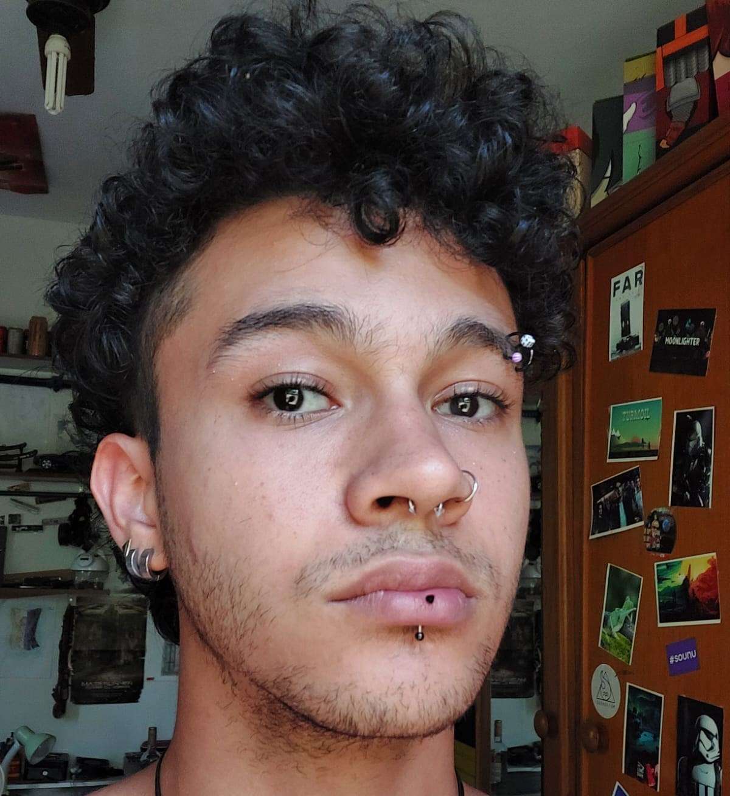

Bom dia! Meu nome é Silvy, eu curso Sistemas de Informação na UFRRJ e atualmente estou concluindo meu segundo semestre na universidade. Tenho interesse por tecnologia desde pequeno e quando completei meu ensino médio no Colégio Técnico da Universidade Rural (CTUR), decidi cursar a área de tecnologia da informação. Atualmente tenho interesse no desenvolvimento de sistemas que auxiliem cultivos para pequenos produtores rural, usando de tecnologias como raspberry pi e arduinos.